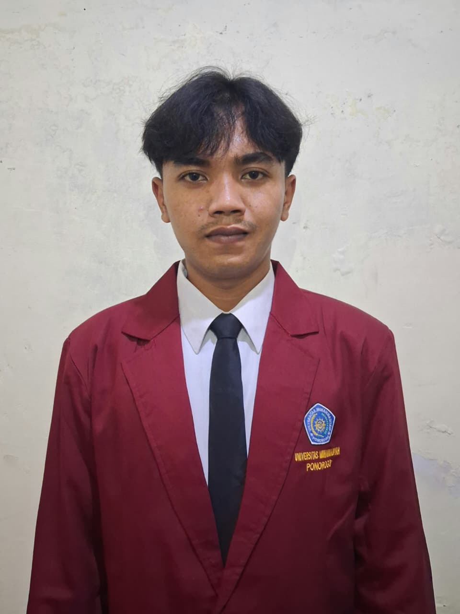

Freelance desain grafis
Mengerjakan desain logo dan stiker untuk produk makanan pada proyek berskala kecil, dengan pendekatan visual minimalis.
Curriculum Vitae · 2026
Mahasiswa Teknik Informatika
Mahasiswa Teknik Informatika di Universitas Muhammadiyah Ponorogo, berasal dari Pacitan dan saat ini tinggal di Jenangan, Ponorogo. Memiliki minat pada desain grafis, pengembangan website, dan pemanfaatan teknologi AI. Bersemangat mempelajari hal baru serta berfokus membangun portofolio profesional, memperdalam kemampuan web development, dan menjajaki peluang kerja maupun penghasilan melalui teknologi.

Mengerjakan desain logo dan stiker untuk produk makanan pada proyek berskala kecil, dengan pendekatan visual minimalis.
Merancang antarmuka website menggunakan HTML dan CSS, serta memperluas pemahaman tentang framework modern.
Mengeksplorasi pemanfaatan perangkat AI untuk mendukung proses desain dan meninjau potensinya bagi peluang kerja maupun usaha.
Memperoleh pengalaman kerja di lingkungan industri logistik.
Program Studi Teknik Informatika